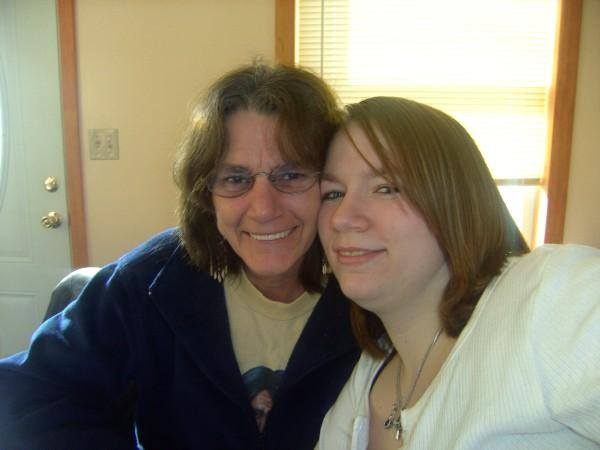

Cherrie Leighton
A loving mother and grandmother

Cherrie Leighton, on the left, with her daugher Allyshia Leighton
Cherrie Leighton, on the left, with her daugher Allyshia Leighton
"A mother is she who can take the place of all others but whose place no one else can take"
- Cardinal Meymillod
If you would like to learn more about Cherrie Leighton, please view her Facebook - Link here